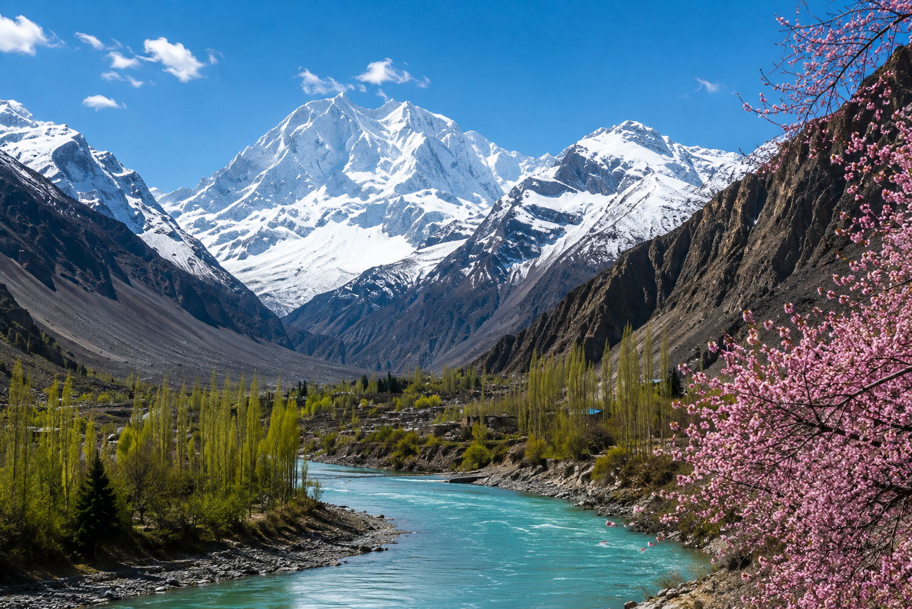

Welcome!
Welcome to my website about my favorite travel destinations. I enjoy exploring beautiful mountains, lakes, forests, and historical places. This website was created as my final CSS project using semantic HTML and modern CSS techniques.

What You'll Find
- Beautiful travel destinations
- Photo gallery
- Interesting facts
- Reasons why I love these places